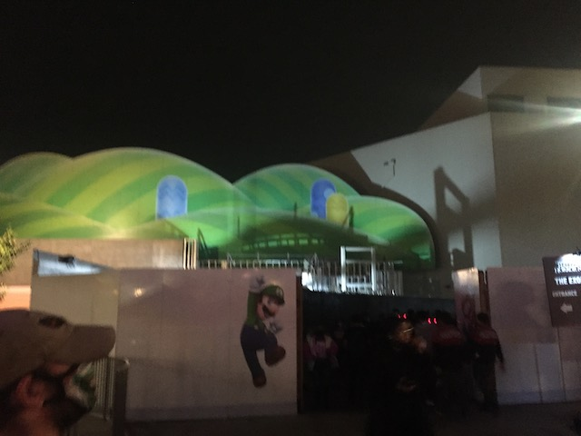
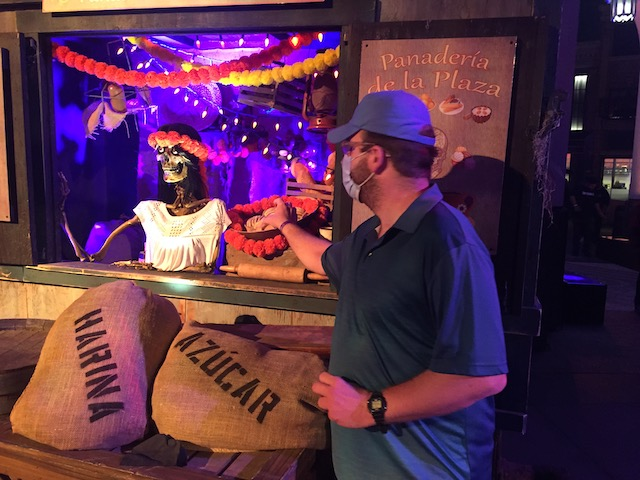

| |
Fall 2021 Photos
Fright Fest Halloween Horror Nights Knotts Scary Farm Belmont Park & Castle Dark
So we weren't initially planning on doing Halloween Horror Nights. I always kept postponing it due to its high price. However, Jason really wanted to do it. And I kept saying "No. We gotta save money". He responded with "Too late! I already bought tickets". Uh....let's just go with it. So I guess we're gonna be going to Halloween Horror Nights this year. And.....oof. The traffic has always been horrendous. I remember complaining about it just driving past it this time of year. Well....time to actually join the mob.
Sorry Citywalk. You're fun and all, but we don't have any time for you today.
Protect yourself from all the scary monsters. Wear a mask.
Hmm. Didn't expect to be back here so soon.
I know that sounds weird since my last visit was over 4 years ago. However, I told myself it wouldn't be worth it to come until Nintendo World opened up.
Of course, we're not really here for the park. We're only here for the mazes. Sorry Mummy & Jurassic Park.
All right. Time to finally check out the final major Halloween Haunt Event in SoCal. Let's see what they have to offer.
Universal has caught on that fire really does make everything scarier.
Hmm. Where to go first?
Wait! Where is everyone going!? Don't they know that the Kung Fu Panda Ride is the best thing at Universal Studios!?
How long until Disney forces this out of Universal Studios (I still can't get over the Simpsons being Disney. No matter how much they try and shove it down my throat)?
What's that? The park is overrun by monsters? Not my problem.
Hey! I thought we weren't doing any of the actual rides today?
*Sigh* I can't believe they threw me off TV and I've been demoted to running the Studio Tram Tour.
*Sigh* I can't believe they threw me off TV and I've been demoted to running the Studio Tram Tour.
Nope. They just use the tram to take people to the maze, based off the Purge.
Welcome to a world of no laws. >=)
So this is a very unique maze. Not only due to the tram, but also....it's all outside. It almost felt a bit more like a scare zone than a maze. But it was still a lot of fun.
 How am I gonna spend my time during the purge? Oh I know! Break into the Bates Motel!
How am I gonna spend my time during the purge? Oh I know! Break into the Bates Motel!
I may not be a fan of the movies (stupid concept), but this is still a really fun "maze".
I see there's plenty more Horror Night fun to be had down in the Lower Lot.
Hey Universal Studios? You mind heading over to Parque Espana for some inspiration? It'd really help. I know you can afford it.
Now this should be a good maze.
Yeah. It's packed here. But....it's all right. This maze kicks ass. Then again, being based off my 2nd favorite slasher film is gonna do you a lot of favors.

Didn't expect to be back here with this still under construction. Well, judging from the reviews its getting in Japan, I look foreward to checking this out when it opens.
Mario looks foreward to seeing you in 2023.
I think another one of the best horror films is a good candidate for a maze at Universal Studios.
Apparently there's a new virus that makes you act possessed by a demon. So....you should probably keep those masks on.
This maze had some cool effects. But....it just felt a bit too fake. Maybe there's more I'm missing. Wanna give it another try sometime.
By far the scariest part of Halloween Horror Nights (Dear certain former "friend" harassing me with 27 different calls and countless threatening voicemails, F*CK YOU!!! I really regret not unfriending you this night).
Ugh. I forgot they updated Jurassic Park to make it match the Jurassic World remake that's far inferior. Cringe. Not looking foreward to checking that out in 2023.
The scares are starting to wear off! I gotta have more fire!
Hmm. A maze based off the Bride of Frankenstein. This should be good.
Not only is this a great Halloween movie, but it's one of the ultra-rare times where the sequel is actually better than the original film. So naturally, I was a big fan of this film.
Am I seeing things or is there a little bit of Mummy here too?
 While not quite as good as the Texas Chainsaw Massacre maze, this was still a great maze that I highly recommend.
While not quite as good as the Texas Chainsaw Massacre maze, this was still a great maze that I highly recommend.
New ride for a very popular animatwed movie that I still haven't done.
Hey look. An underrated film. Not as good as Wolf Man, but still very enjoyable.
Just in case you forgot where you are.

Excuse me, but this churro you sold me is rotting. I demand a refund.
Sorry Universal, but the tree is not scary.
Excuse me, but where can I find the other mazes?
Time to do the last maze. The one based off the Haunting of Hill House.
I haven't seen the show, so I feel like there's parts of this maze that I don't understand.
But regardless, this was still a really good maze.
Is it me or do those lights look like a Hyper Volare (now there's something to scare most coaster enthusiasts lol)?
Normally, I'd start doing some rides. But....it's 1 AM, and I have work the next morning. So we should get out of here.
 Better throw in a roller coaster photo since this is IncredibleCOASTERS.
Better throw in a roller coaster photo since this is IncredibleCOASTERS.
Well, thanks for a really fun time. It may not be the best Halloween event, and it's not something I'm going to be doing reguarly. But I did have a lot of fun doing this, and look foreward to doing this event in Orlando soon (hopefully).
Knotts Scary Farm
Home
|